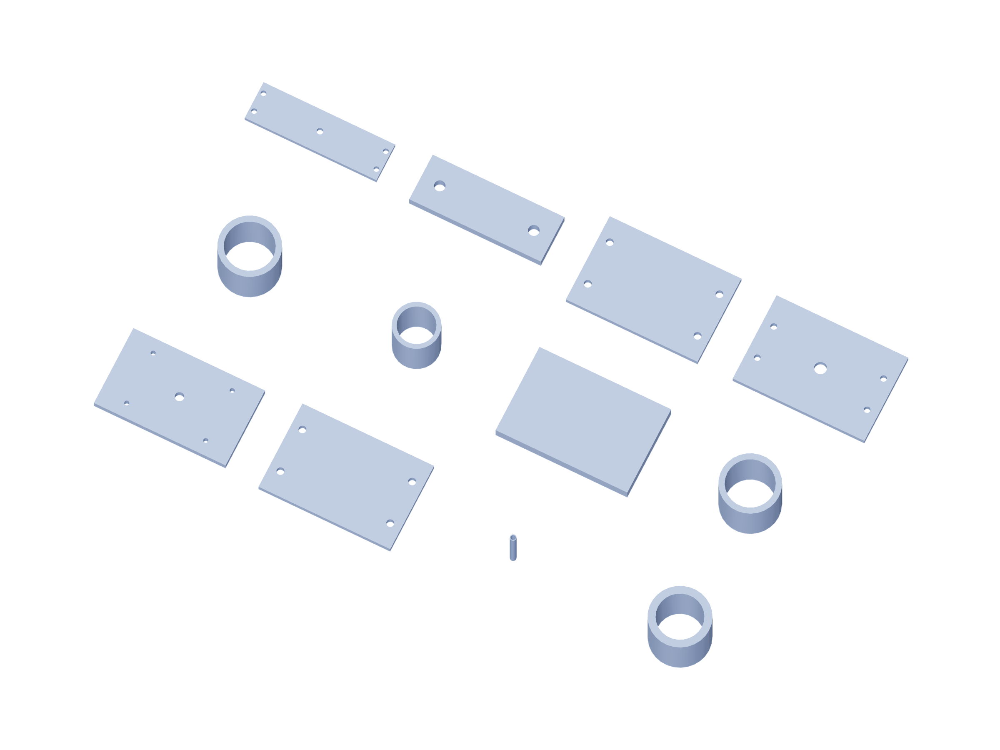

Kit / fabrication08 / 179
Metal kit / 2
6061 aluminum dimensions are finished blank sizes. Bought angles remain angles; shafts, bearings and guide blocks are separate purchased parts.

| Part | Qty | Finished blank / mm |
|---|---|---|
shaft-capture-bridge | 1 | 100 × 60 × 6.35 |
capture-catch-upper | 1 | 120 × 80 × 6.35 |
capture-bridge-spacer | 4 | 8 × 8 × 75 |
capture-catch-spacer | 2 | 8 × 8 × 7.85 |
capture-gauge-guide-spacer | 2 | 10 × 10 × 9.825 |
capture-bearing-riser | 2 | 10 × 10 × 12.825 |
installed-Z-load-platen | 1 | 60 × 40 × 6.35 |
installed-Z-gauge-spacer | 2 | 10 × 10 × 10 |
test-output-bridge | 1 | 140 × 40 × 6.35 |
test-output-arm | 2 | 70 × 25 × 6.35 |
drive-test-foot | 1 | 120 × 80 × 6.35 |
force-test-platen | 1 | 120 × 80 × 6.35 |
Use gun-positioner-drill-templates.pdf at actual size. The 3D STEP and registered projections govern formed angles and hub faces.